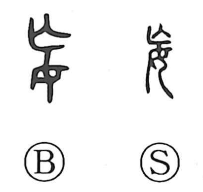

妄

Kun: midari, itsuwari | On: mou, bou
delusion ・ recklessness ・ falsehood ・ absurdity
Explanation
Shirakawa presents 妄 as a phono-semantic character, with 亡 acting as the phonetic that points to the on-reading mou. The Shuowen glosses its core sense as “to become disordered,” and further defines it as wild, baseless talk. From this nucleus arise the meanings “recklessly, indiscriminately” and “false, unfounded,” seen in words such as 妄信 (credulous belief) and 妄想 (fanciful delusion). In Buddhist usage, terms like 妄心 and 妄念 name a mind bewildered and stained by passions, while 妄執 describes the clinging attachment that grows out of such delusion.